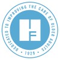

About Me!
This page covers my academic and professional experience.
- WORK EXPERIENCE
Graduate Teaching Assistant - Quantitative Foundations
Columbia University Mailman School of Public Health
Aug 2024 - Present
New York, United States
As a Teaching Assistant for the Research Methods and Applications (ReMA) Quantitative Foundations, I supported the learning and development of students in the core areas of Epidemiology and Biostatistics. My responsibilities include conducting weekly office hours to address student questions and provide personalized guidance on course content. Additionally, I lead weekly lab sessions where students practice and apply the week’s concepts, focusing on critical topics such as disease incidence and prevalence, study design, and hypothesis testing.
 Health and Aging Program Intern
The John A. Hartford Foundation
May 2024 - Aug 2024
New York, United States
Supported the John A. Hartford Foundation’s mission of improving the quality of care for older adults by assisting in developing and implementing key older adult programs. Conducted research on healthcare policies, collaborated with multidisciplinary teams, and supported grant management processes to contribute to the Foundation’s advocacy efforts. Additionally, engaged with community partners and healthcare organizations to foster collaborations and enhance project outreach.
Certified Nursing Assistant
Medely
Jul 2022 - Aug 2023
San Francisco Bay AreaSan Francisco Bay Area
Worked as a Certified Nursing Assistant (CNA) through various hospitals and healthcare facilities across the Bay Area that experience healthcare staffing shortages. My duties consisted of providing care to patients, assisting them in activities of daily living, routinely taking vitals, and serving as a conduit between patients, nurses, and doctors.
Patient Care Assistant in Surgical Intensive Care
Scripps Health
Nov 2021 - Feb 2022
San Diego, California
Assisted patients with activities of daily living, performing vital signs, EKGs, and bladder ultrasounds. Played as a key member of the clinical care team in collecting data and ensuring the patient has a safe, organized environment. Also supported the unit with a variety of patient logistic, clerical, equipment/supply, and charge reconciliation duties.
Tobacco Used and Prevention Youth Advisory Board (TUPE)
Alameda County Office of Education
Aug 2016 - Jul 2020
Hayward, California, United States
Researched current adolescent tobacco and alcohol use, as well as effective prevention and intervention strategies. Designed and implemented innovative programs by working with other students on the board at UC Berkeley. Was also in charge of hosting and governing the annual “Alameda County Annual Public Service Announcement Art Contest.”
- EDUCATION
Columbia University Mailman School of Public Health
Master of Public Health - MPH, Epidemiology, Biostatistics
Sep 2023 - May 2025
Certificate in Applied Biostatistics and Public Health Data Science
 University of
California, San Diego
University of
California, San Diego
Bachelor of Science - BS, Human Developmental Sciences Specialization in Healthy Aging, General Biology
Las Positas College
Associate of Science - AS, Biology, General
Jan 2017 - Aug 2020
Middle College Program - Obtained a rigorous high school education while concurrently earning college credits
Dublin High School
High School Diploma, Biomedical Sciences
Aug 2015 - May 2019
Activities and societies: Project Lead the Way Biomedical Academy
- PROJECTS
Jan 2017 - Present
A Homemade Device to Detect Lung Cancer
Designed a breath sampling apparatus that could potentially detect lung cancer by absorbing volatile organic compounds (VOCs) in the exhaled breath of patients. The sensor measured the concentration of those clinical markers through a resistance change of a mixture of carbon powder and tetracosane on a soldered circuit board.
Jul 2024 - Aug 2024
Public Health’s Role in Caregiving: Best Programs for Caregiving, GUIDE Model, and The California PlanPublic Health’s Role in Caregiving: Best Programs for Caregiving, GUIDE Model, and The California Plan
Developed a poster for the 2024 American Public Health Association (APHA) Annual Meeting and Expo, focusing on the critical role of public health in caregiving across diverse contexts and settings. My work highlights successful caregiving programs, the implementation of the GUIDE model (Guiding an Improved Dementia Experience), and the innovative strategies outlined in The California Master Plan for Aging. The poster underscores the importance of public health frameworks in enhancing caregiver support systems and fostering a more inclusive and effective approach to caregiving.
- VOLUNTEERING
AFTD Advocate & Volunteer
The Association for Frontotemporal Degeneration (AFTD)
Aug 2024 - Present
Contributed to raising awareness, providing support, and advancing research for those affected by frontotemporal degeneration (FTD). Assisted with community outreach and organized FTD awareness events in New York City.
Laboratory Research
Assistant at The Mobley Lab
UC San Diego
Mar 2021 - Sep 2021
Prepared immunohistochemistry samples of mouse brain tissues to be used in the lab. Independently performed basic histology procedures (trimming, processing, microtome, staining, cover slipping). Performed method development experiments to troubleshoot lab software integrations
Vaccination Super
Station Volunteer
UC San Diego Health
Feb 2021 - Jun 2021
Provided oversight of patients after they receive the COVID-19 vaccine and escalate any adverse reactions to the appropriate medical staff. Assisted with delivering equipment, supplies, and other items to medical staff as needed